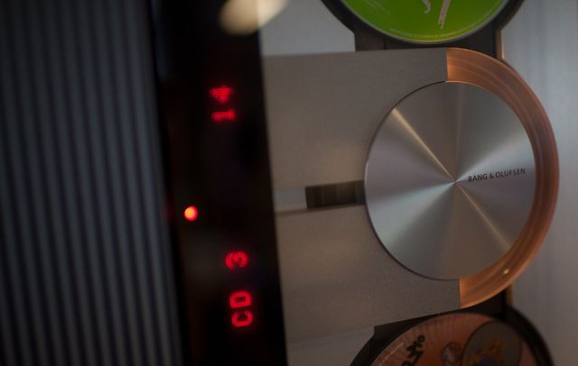
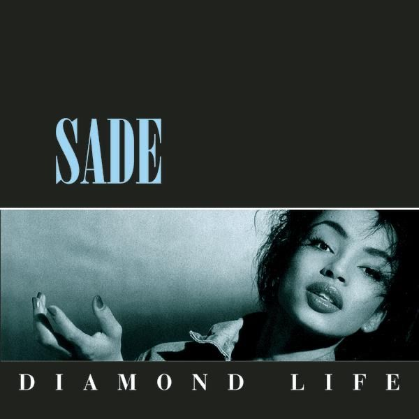

« Turn ideas into reality. »
L'ingénierie mécanique au service de l'objet bien fait.
Le son et la mode : ce qui m'inspire et me fait avancer.
« Turn ideas into reality. »
L'ingénierie mécanique au service de l'objet bien fait.





Toute la bande audible, de la mécanique des membranes à l'acoustique des pièces.


Son : Bang & Olufsen, KEF, DALI, Focal, Yamaha, Hitachi.
Mode : Louis Vuitton, Hermès, Dior, Chanel, Comme des Garçons, Maison Margiela, Jacquemus, AMI Paris, Comme des Petits Chats et les ateliers indépendants.

Une malle, une selle ou une enceinte : des assemblages précis, des tolérances, des matériaux choisis et un contrôle qualité exigeant. La mécanique au service du beau.
Ouvert à tous les secteurs : le son et la mode sont mes passions, mais je m'épanouis dans toute la mécanique.